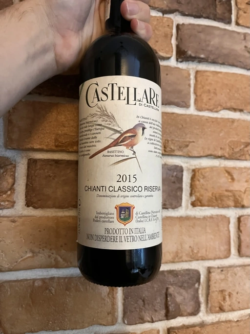

- Type
- Red Still, Dry
- Producer
- Castellare di Castellina
- Vintage
- 2015
- Location
- Italy, Chianti Classico DOCG
- Grapes
- Canaiolo, Sangiovese
- Alcohol
- 13.5
- Sugar
- 1
- Price
- 593 UAH
- Cellar
- N/A
Ratings
2022-10-24 - 8.00
Good and sophisticated Chianti. Despite being seven years old, it still shows the energy of a young wine. Beautiful and ripe bouquet: cherry confiture, violets, leather, spices and tomato stem. Round yet rustic palate with grippy and dry tannin, well-integrated and backed by volume. Good acidity, good balance and lots of flavours: violets, confiture and herbs.